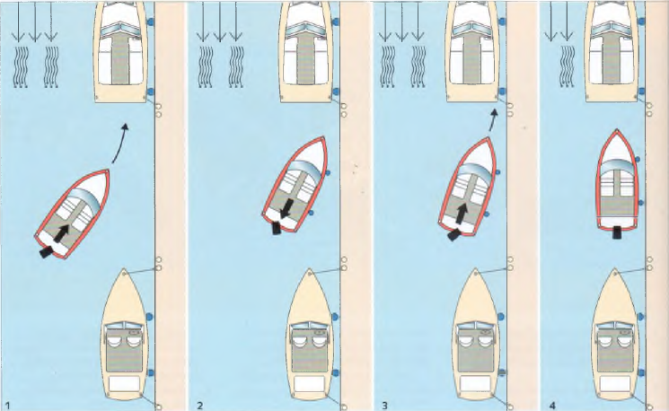

Motorboote haben keine Bremsen. Die fahrt kann nur aufgestopot werden durch einen kurzen Gasstoß athte-aus (beziehungsweise voraus). Grundsätzlich sollte, wenn irgend möglich, stets gegen den Strom oder Wind angelegt werden. Wenn beide aus entgegengesetzten Richtungen kommen, gegen den. der cen stärksten Einfluss au’ das Boot hat. Strom (Wind) von vorn stoppt das Boot auf natürliche Weise ad, wahrend Strom (Wind) von hinten beim Anlegen unerwünschten Schub voraus erzeugt. Starker seitlicher Wind kann es unmöglich machen, langsseits an einen Steg heranzugehen.
Beim Anlegen kann sich unter Umstanden der Radeffekt des Propellers günstig auswirken Beim langsseits Ar egen mit rechtsgängigem Propeller ist Backbord die -Schokoladenseite«. legt man zum Abstoppen der fahrt den Rutkwartsgang ein, holt cer Raaef-fekt das Heck ‘ast automatisch an den Steg heran. Auch bei1-Antrieben kann manchmal em Radeffekt auftreten, allerdings nicht so ausgeprägt wie bei einer starren Welle.
» Alle Manöver grundsätzlich nur mit so viel Gas fahren, wie erforderlich ist. um manövrierfähig zu sein.
Art Uqc« langsseits nicht mcglicli
fntweder ste M W»M gegen Strom otrallrl tum Steg, wernbibt em kräftige: wind Swghef.
I Im «eilen Winkel den Steg ar Jaufen. Am Bog kräftige Fender ausbnngrn Mjy.'nnc stoop oder kurz zurück. Vorleine an land
1 Antrieb w- Sieg erschlagen. Mas Ome Ungarn zurück
3 i J» Heck wird zv? Steg gezogen. dis Absthe ren des Bugs durch Cie Verlerne verhindert Oie leine nur so weit Heren, da» der Sag drehen eann
4 liegt da, Boot annähernd para!’.?! zum Steg, kurz Gegenruder geben, um die Drehbewegung aufzvfangen. Ujsctnnc MC-». Achter le'ne'ewmichen.
► Bei der Annäherung an am Ufer enger Gewässer festgemachte Fahrzeuge darauf achten, dass die Geschwindigkeit verringert wird, um schädlichen Sog und Wei -lenschlag zu vermeiden.
► letnenmanover niemals aus der Hand fahren, sondern stets einen Torr um eine Klamoe oder einen Poller nehmen.
Aufpassen, dass man nicht das Bojengesthirr überfahrt und in den Propeller bekommt. Deshalb eine Boje stets von lee anlaufen.
► In stehenden Gewässern gegen den Wind an die Boje herangehen, da sie in Windrichtung hegt.
► In strömenden Gewässern gegen den Strom an die Boje hierangehen, weil er ihre tage bestimmt und nicht der Wind, ks sei denn, der Strom ist nur schwach und dagegen steht ein starker Wind
oHao z K/K/K
Anlegen gegen »blanltge. Wind (Stioi) mit surer Wei'« und Ruder
Wenn metf ich mit der •Schckoladenseite
anle^en »Ho mtl einem rec Nsgang^en p'«eiler an der Barkbwdseite
1 lm Winke1vnnehw4S'anla.ifen.Das Vorschiff gut atfendem. vorleine an land, Rude- mittschiffs - es hat keine Wirkung und -ml der Maschine »oll euruckge^e-i
2 Cer »adeffekt not- das Hetkv aer Steg
Bevor das Schiff nach gelungenem Anlegemanöver längere Zeit »erlassen wird, sind alle Seevennle tu schtieflen, und der Hauptschalter des Bo'dneues ist austuschalten
f Inlauten in eiie Stegboi bei seitlichem Strom (WSMjmlt Z-Artneb
1 in seinem Wickel den luv-Pfahl »'laufen, Armes te Kht rach luv eirrschbgen und eine Achtetspnng ausdne^n. fahrt «raus. Oie Spring entsprechend dichtnolen, damit das Heck nacht ausseneren kann.
2 Mit Luv-Ruder den seitlicher. Strom oder Wn Sdnxk aufs Achterschiff ausgleichen. Masi* ne stopp Zunächst die luv-Vcrleine an land festmachen
Dann dtelee-leine aush’irger Beide Vorleinen auf S'p setren. sodass sae von üc»d aus gefiert «erden können.
3Antrieb rr'lee-Planl. mit der Maschine achteraus gehen und das Heck rum lee Pfahl riehen. Maschine stopp lee-Achtetieine ausbnngen. Vor und Achterlemec «em Hand regulieren, bis das Boot öcht'g)fsener Box hegt Maschine aus
